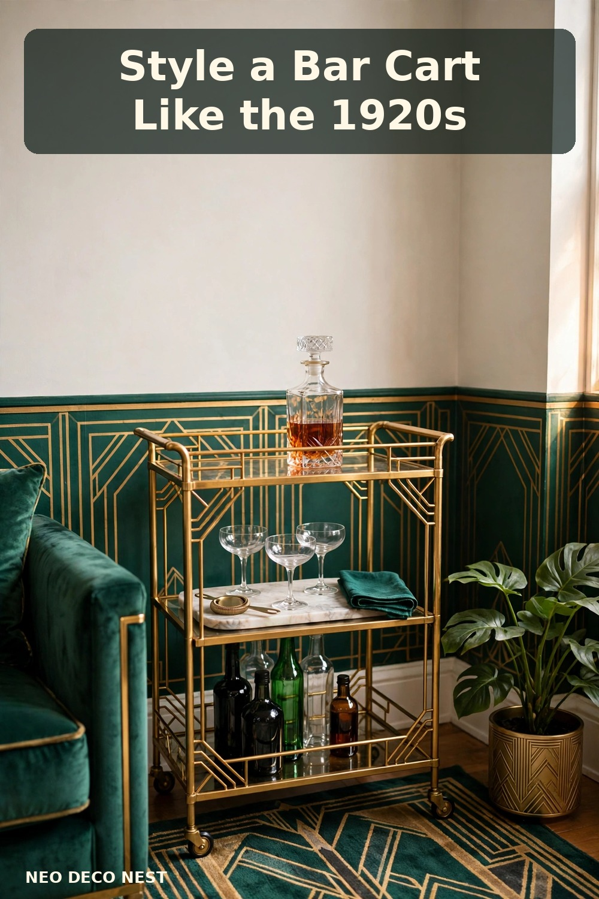
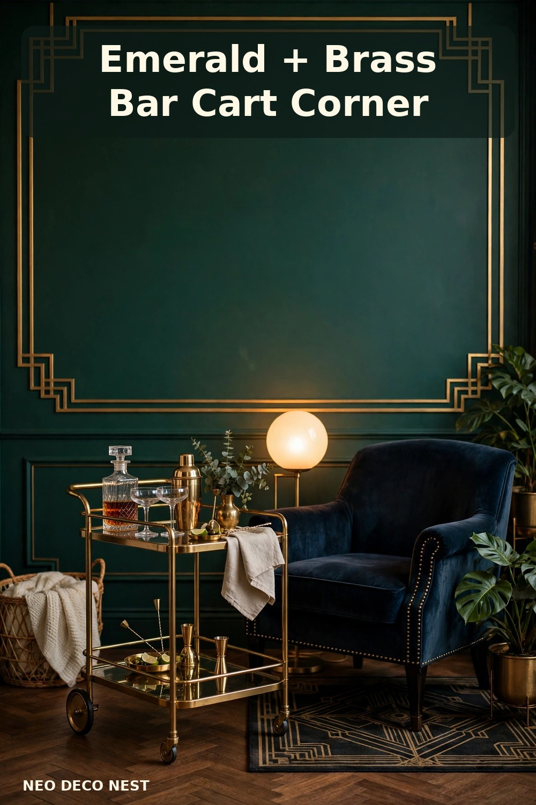
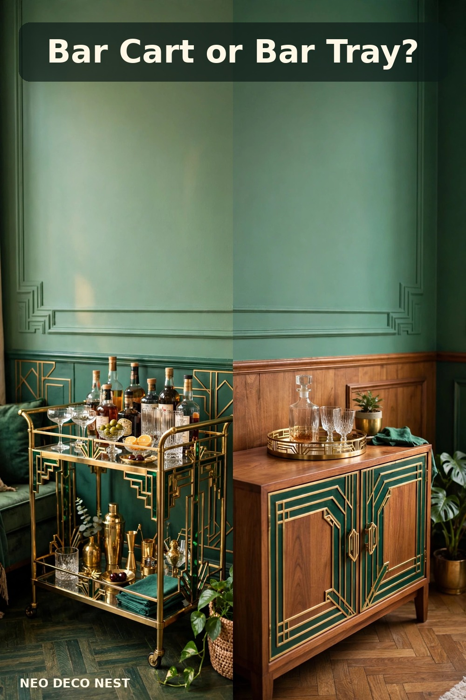
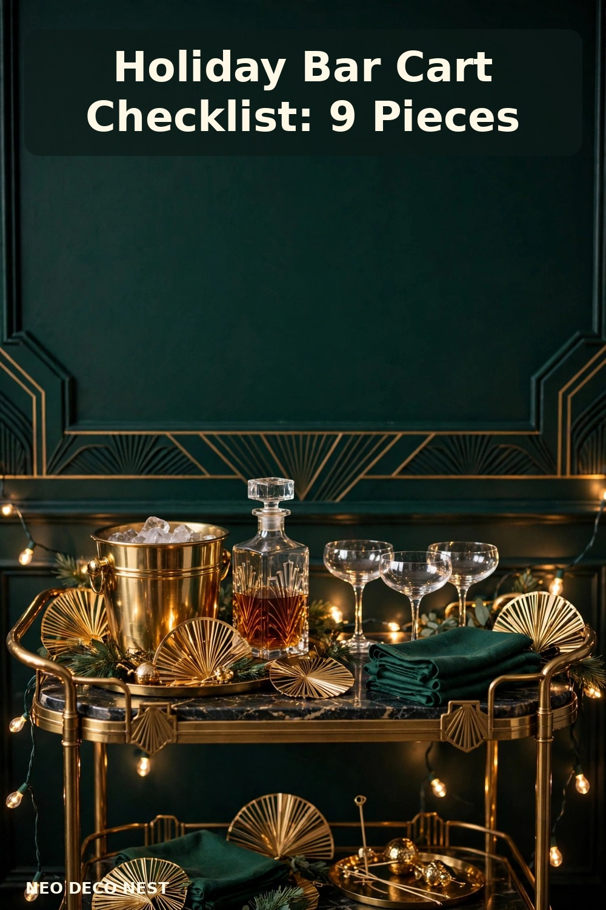

Art Deco Bar Cart Ideas: 5 Pieces for a Glam Home Bar
This post contains affiliate links. As an Amazon Associate I earn from qualifying purchases. If you buy through these links, we may earn a commission at no extra cost to you.
Images on this page are styled inspiration renders created for Neo Deco Nest — the Amazon listing shows the exact product, colors and dimensions.
The bar cart is the purest Neo Deco move: one small corner, a little brass and glass, and the room suddenly has a ritual. These are the five pieces behind our Art Deco Bar Cart board, the ones we would start with, in the order we would add them.

RiteSune Gold 2-Tier Bar Cart
Two glass tiers on a slim gold frame give you a full home bar that still reads light and airy in a small corner. The rolling casters make it a true serving cart rather than a fixed stand: wheel it to the sofa for cocktail hour, then park it back against the wall. Raised rails keep bottles corralled, and the open shelves show off glassware instead of hiding it.

Glassique Cadeau Art Deco Coupe Glasses, Set of 4
The coupe is the most Deco glass silhouette there is, and this set of four nails the speakeasy proportions: a wide, shallow bowl on a slender stem. They make champagne and classic cocktails look intentional, and they work just as well for desserts. On an open bar cart they double as decor between parties.

Henn&Hart Reagan Table Lamp
A milk-glass globe on a brushed brass stem is the quickest way to make a bar corner feel like a 1920s hotel lounge. The globe diffuses light instead of glaring, which flatters bottles and glassware. It is sized for a cart top or side table, so it layers into the setup without stealing shelf space.

FREELOVE Round Gold Serving Tray, 12 in
If a full cart is too much furniture, a round gold tray turns any console or countertop into a bar station. The raised rim keeps bottles and glasses contained, and the reflective finish echoes brass hardware elsewhere in the room. When the party is over it moonlights as a vanity or coffee-table tray.

ZORMY Ice Bucket, 3L, White Gold
A generous 3-litre bucket in a white-and-gold finish, with a lid and tongs included. The lid is the detail most buckets skip: it keeps the ice clean and the presentation tidy through a long evening. It is the piece that makes the holiday version of the cart look finished rather than improvised.
Every piece here was first featured on our Pinterest board. Follow Neo Deco Nest on Pinterest for a new Neo Deco find every day.